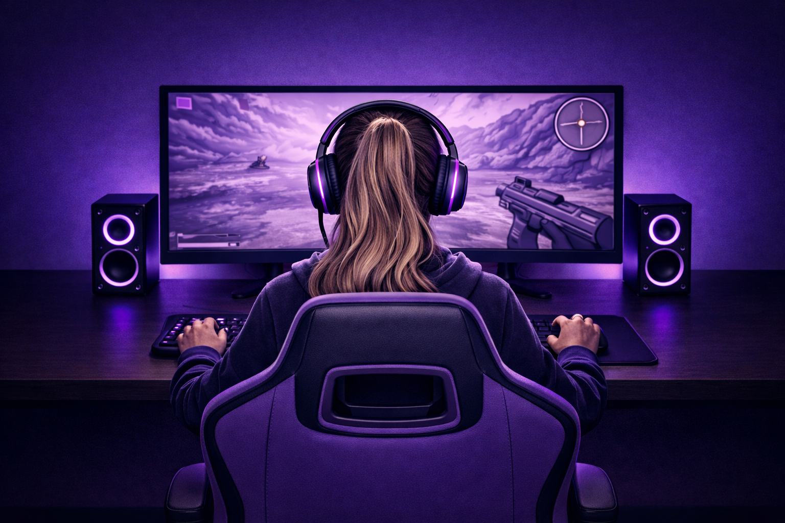

Kvindelige gamere har altid fandtes

Men har aldrig haft samme repræsentation.
Mine og andre kvinders oplevelser
Da jeg var 14, fik jeg min første spillekonsol, og siden da har jeg været det, nogle kalder en “girl gamer”. Jeg vil dog hellere bare kalde mig en gamer. I dag har jeg over otte års erfaring med alt fra konkurrenceprægede online-spil til story-baserede singleplayer-spil, og med de mange år følger også en del oplevelser, desværre er mange af dem negative. Der gik ikke lang tid, før jeg begyndte at høre kommentarer som “go back to the kitchen” eller “go make me a sandwich”, kun fordi mine holdkammerater kunne høre, at jeg var kvinde. Jeg lærte hurtigt, at det ofte var bedre ikke at bruge min mikrofon, især hvis jeg ikke var blandt de bedste spillere på holdet. Shit-talking har altid været en del af gaming, men når man er kvinde, er det ikke kun ens præstation, der bliver kritiseret, ofte bliver hele ens køn det også. Som kvindelig gamer kommer det faktum, at man er kvinde, næsten altid først. Enten er man dårlig, fordi man er kvinde, eller også er man god på trods af, at man er kvinde. Men hvad fanen har mit køn egentlig at gøre med, hvor god jeg er til at trykke på knapper? En undersøgelse fra 2022 viste tydeligt, hvordan denne behandling kan påvirke spillere. Tre professionelle spillere fra Valorant deltog i et eksperiment, hvor de først spillede med deres egne stemmer og derefter med en voice-changer, så de lød som kvinder. Resultatet var markant: alle tre præsterede langt dårligere, når de brugte en feminin stemme. Én spiller gik fra 15 elimineringer og kun 2 dødsfald til blot 3 elimineringer og 16 dødsfald. Så snart holdkammeraterne troede, at der var en kvinde på holdet, nægtede de at samarbejde og kom endda med trusler som “alle kvinder burde bare dø”. Eksperimentet viser, hvordan den behandling, kvinder ofte møder i online-spil kan have en direkte effekt på deres præstationer og gøre det sværere for dem at udvikle sig som spillere.
Eksempler på sexisme i spil
Ser man på tidslinjen, er det tydeligt, at designet af kvindelige karakterer i videospil har udviklet sig i en mere positiv retning gennem årene – men udviklingen er langt fra færdig. For mindre end et år siden udkom online-multiplayer-spillet Marvel Rivals, som introducerede en række kvindelige spilbare karakterer. Mange af dem blev dog kritiseret for urealistiske kropsproportioner og meget afslørende tøj. Det samme gælder hovedpersonen Eve i Stellar Blade, hvis design også har været centrum for debat. Det peger på, at spilfirmaer stadig ofte prioriterer at tiltrække et mandligt publikum frem for at skabe mere realistiske og relaterbare kvindelige karakterer – selvom omkring 48 % af alle gamere er kvinder. Samtidig bliver kvindelige karakterer ofte vurderet anderledes end mandlige. En mandlig karakter som Kratos fra God of War bliver ofte rost for sin brutalitet og styrke, fordi det passer til det barske univers, han lever i. En kvindelig karakter som Abby Anderson fra The Last of Us Part II har derimod fået kritik for at være for voldelig og følelseskold – selvom hendes verden er mindst lige så brutal. Det rejser spørgsmålet: Skyldes forskellen i kritik selve karaktererne, eller at spillere stadig sjældent bliver præsenteret for kvindelige karakterer, der får lov til at være lige så brutale og komplekse som deres mandlige modparter?
Konsekvenser af seksualisering af kvinder
Seksualisering af kvindelige karakterer i videospil kan have flere konsekvenser, både for spillere og for den måde, kvinder bliver opfattet i gaming miljøet. Når kvindelige karakterer gentagne gange bliver designet med urealistiske kropsproportioner, afslørende tøj og fokus på deres udseende frem for deres personlighed, kan det være med til at skabe et snævert billede af, hvordan kvinder “bør” se ud og opføre sig. Det kan gøre det sværere for nogle spillere at se kvindelige karakterer som lige så seriøse, kompetente eller komplekse som mandlige karakterer. For kvindelige spillere kan det også påvirke, hvordan de oplever spil og gaming fællesskaber. Når kvinder i spil primært bliver fremstillet som sexsymboler eller sekundære karakterer, kan det være sværere at finde figurer, man kan spejle sig i. Samtidig kan denne type repræsentation være med til at normalisere en kultur, hvor kvinder i gaming ikke altid bliver taget lige så seriøst som mænd. Derudover kan seksualisering også påvirke udviklingen af spil. Hvis spilfirmaer fortsat prioriterer designs, der primært skal tiltrække et mandligt publikum, kan det begrænse variationen i de historier og karakterer, der bliver skabt. Resultatet er, at mange spil stadig gentager de samme stereotyper i stedet for at udforske mere realistiske og nuancerede portrætter af kvinder.